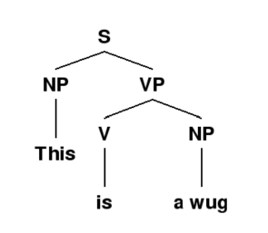

Syntax Trees are one of the most often used models to display syntactic information about a sentence in linguistics. They are used in presentations, research papers, and classes. LING410, LING200, LING240, LING311 for example, are just some classes at UMD where a student is expected to make a syntax tree.
There are a few ways to do this. One is to draw them by hand, take a picture and paste it into the assignment. Another is to open a paint program and draw it with a mouse. Neither of these are particularly convenient or neat looking. The academic standard is to use a website like JsSyntaxTree where syntax trees can be generated using a text based interface. While the results look great, text based interfaces can be daunting. Someone taking LING200 for gen-ed credit shouldn't be expected to learn a text based formatting tool.
To fix this, I decided to make my own graphical interface based syntax tree generator. It is hosted on my website. Anyone can use it for free. You can find it here.
I wrote it in Python. It is a precompiled PyGame project hosted on GitHub pages. This paradigm allows me to have control on a per-pixel basis, enabling smooth dragging and scaling. By having this compiled before-hand, I can host it statically with minimal CSS for aesthetics. Making it essentially free for me to host.
GitHub Repository
